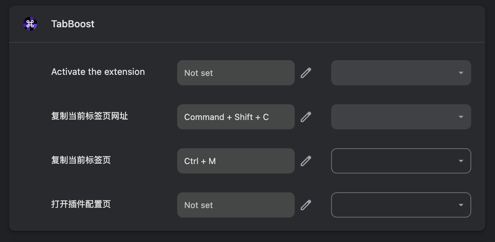
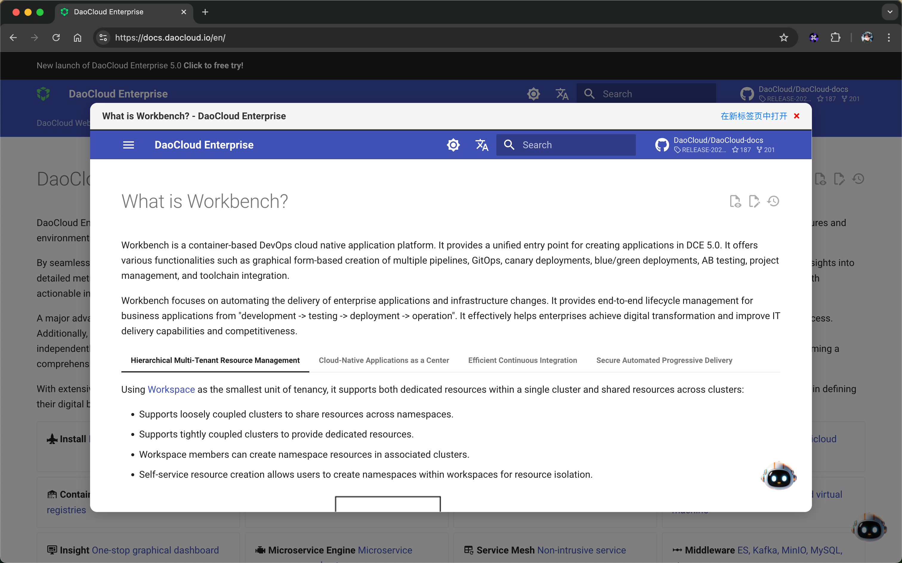

TabBoost

简介
TabBoost 是一款 Chrome 扩展，灵感来源于我对 Arc 浏览器的深度使用。作为一名长期使用 Chrome 的用户，我很喜欢其与 Google 帐号同步的便捷体验。尽管如此，我也欣赏 Arc 浏览器中的一些独特设计，尤其是针对用户体验的细节优化。经过近两年在 Arc 中的使用，且在此期间频繁切换回 Chrome，我决定将 Arc 中最常用的功能复刻到 Chrome 上。
目前，TabBoost 的最小可用版本（MVP）已经完成，并且已经能够满足我个人的需求。虽然我并不是一个经验丰富的 JavaScript 开发者，但得益于大语言模型的支持，我顺利完成了这一项目的开发。我用了一个工作日的晚上和周六的早晨完成了这段代码。
该插件尚未经过完整测试，目前仅在我的个人设备上运行，仍有不少优化空间。未来我将持续改进，如果你有兴趣，欢迎提出 Issue 或提交 Pull Request。
功能
- 复制当前标签页： 使用快捷键
Ctrl+M快速复制当前标签页，并自动切换到新标签页。 - 复制当前标签页网址： 使用快捷键
Shift+Command+C快速复制当前标签页的网址到剪贴板，并在右上角显示提示信息。 - 自定义快捷键： 您也可以在 Chrome 插件的快捷键管理中的设置自定义快捷键。
- 支持
Arc Boost的方式弹窗打开，并在有需要时才在新 Tab 打开。- 按住
Command键点击链接时，弹窗打开链接，Arc 使用的是Shift键，这里我选择了Command键，因为我更习惯这样的操作 - 支持使用
Esc快速关闭当前弹窗
- 按住
- 支持
Split View Mode，：支持在当前标签页中并排显示两个网页，左右分屏浏览。


安装
- 打开 Chrome 浏览器，访问
chrome://extensions/。 - 打开右上角的“开发者模式”开关。
- 点击“加载已解压的扩展程序”按钮。
- 选择
TabBoost文件夹。
使用
安装完成后，您可以使用以下快捷键：
Ctrl+M：复制当前标签页Shift+Command+C：复制当前标签页网址Command+ 点击链接：弹窗打开链接
您也可以在 Chrome 插件的快捷键管理中的设置自定义快捷键。
快捷键设置
- 在 Chrome 浏览器的工具栏中找到 TabBoost 图标，右键单击并选择“选项”。
- 在设置页面中，您可以自定义每个功能的快捷键。
贡献
欢迎贡献代码！如果您有任何建议或发现任何问题，请提交 Issue 或 Pull Request。
许可证
本项目采用 MIT 许可证。